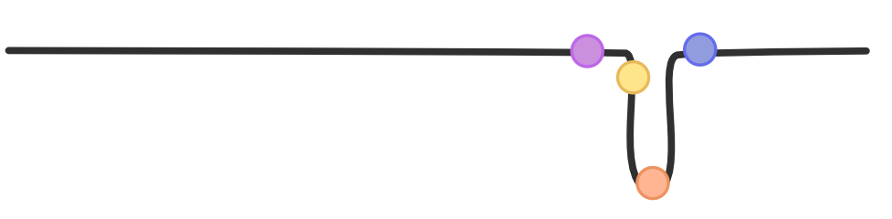
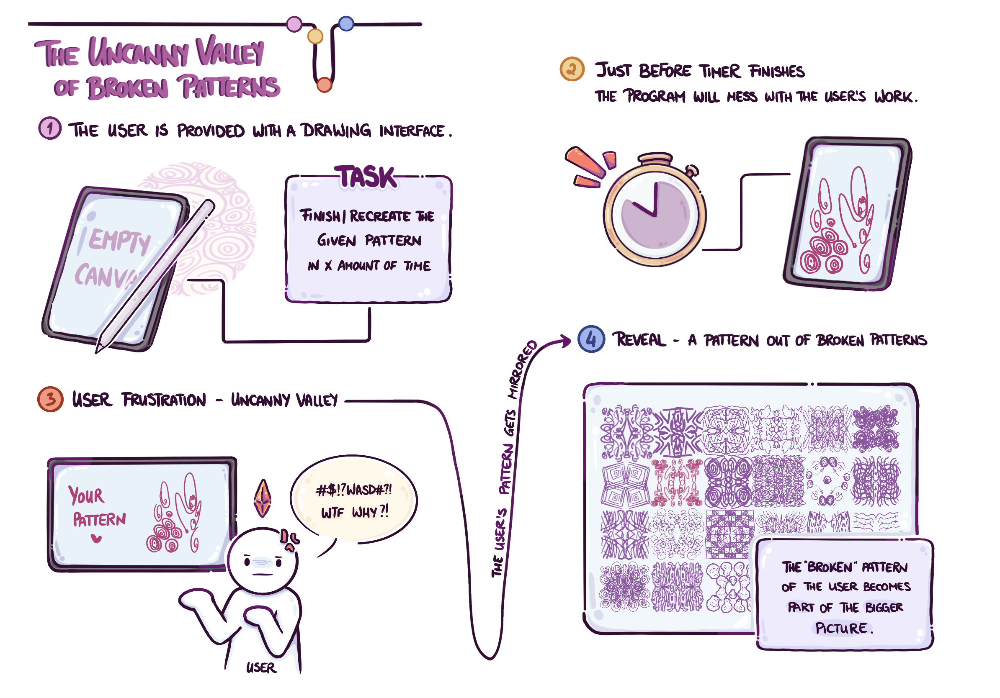
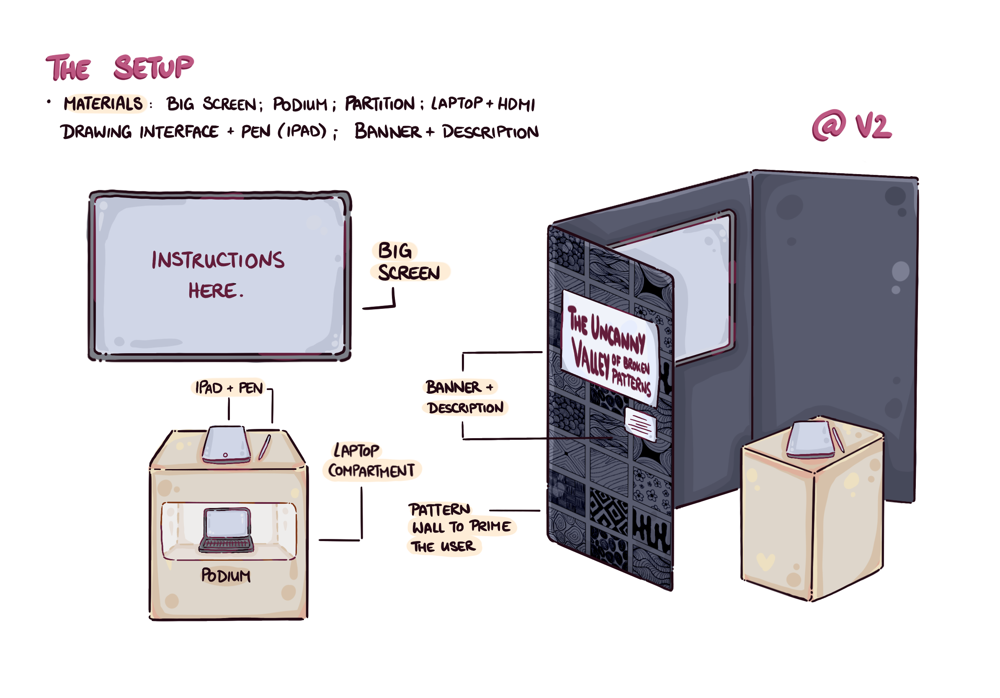
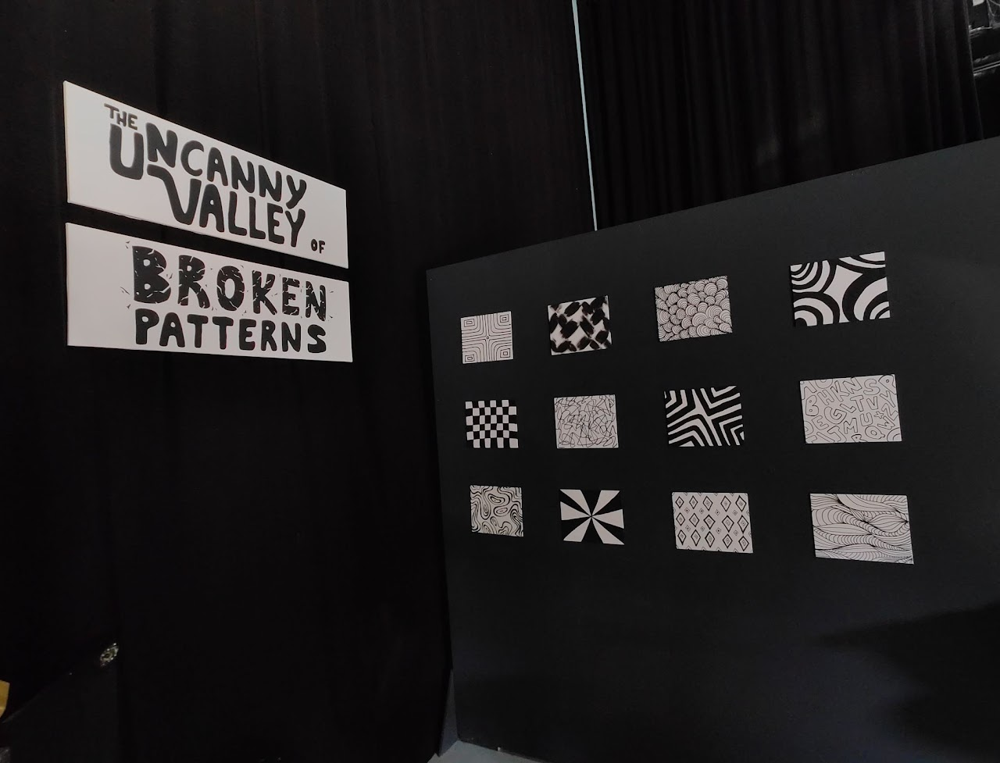
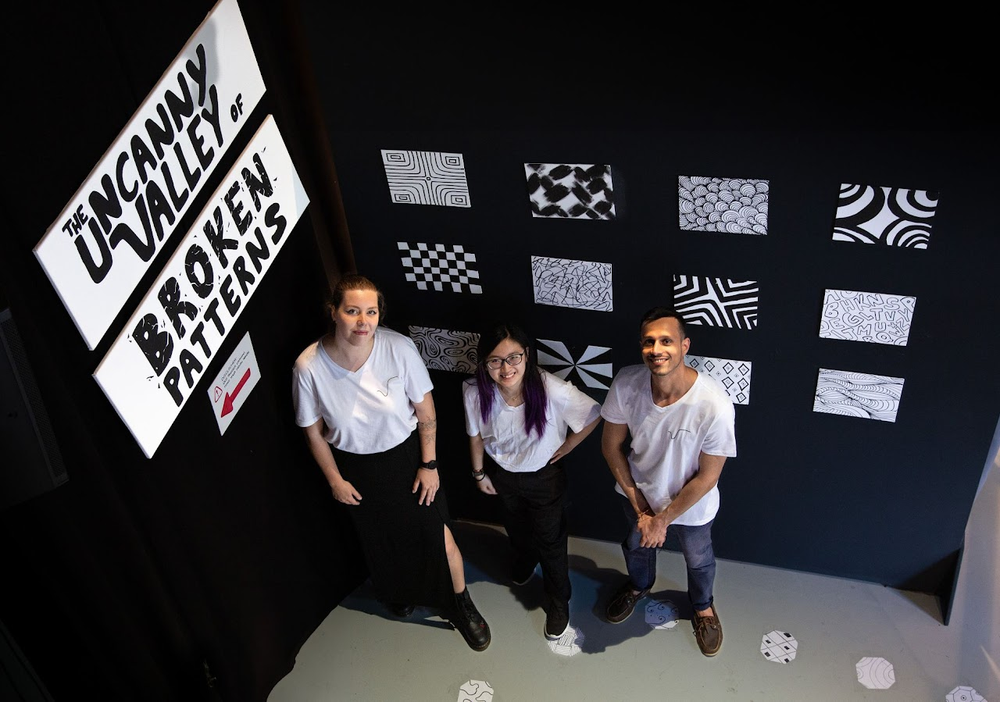
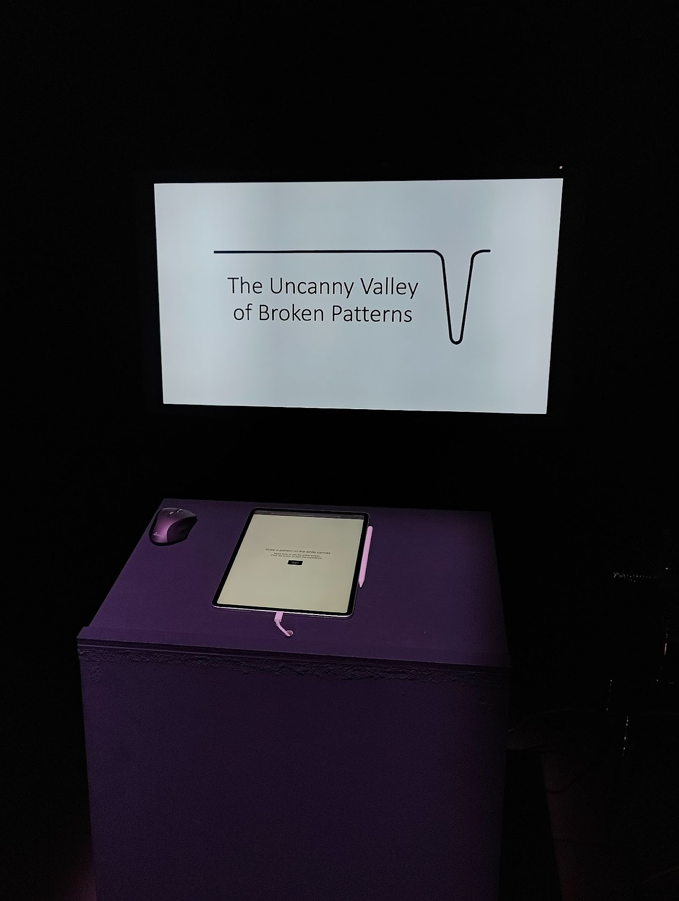

The Uncanny Valley of Broken Patterns

Project Overview
Patterns are the quiet architecture of the world – repeating forms that shape both nature and design. They promise structure, rhythm, and predictability. Yet when that rhythm falters, when something is almost right but not quite, a subtle discomfort begins to stir.
Inspired by Masahiro Mori’s “Uncanny Valley” concept, this project explores the tension created by the moment when a pattern breaks and why it feels so strangely unsettling.
Presented at V2_ Rotterdam as an interactive exhibition and spatial installation, The Uncanny Valley of Broken Patterns translates scientific research into a sensory experience.
Context
This project was developed as part of the course Science to Experience at Leiden University, where we were challenged to translate a scientific insight into a tangible, sensory experience. Our given theme was “Patterns.”
Patterns are phenomena that exist in various aspects of the world, whether they are found in nature, human-made designs, or abstract ideas. As such, the elements of a pattern repeat in a predictable manner [1].
Visual patterns in nature are often chaotic, rarely exactly repeating. However, with these patterns there is some level of visible recurring events, thus providing a level of predictability. These regularities can also be created by symmetries of rotation and reflection.
Our team explored patterns across multiple domains: visual, auditory, behavioral, and societal. We investigated various areas and types of patterns:
- Perception – contrast illusion, color constancy
- Mathematics – Turing patterns
- Psychology – heuristics like the Barnum Effect and Representativeness Bias
- Emotion – discomfort in irregular or “dangerous” visual clusters such as trypophobia
Through our brainstorming, one shared fascination emerged – patterns that disturb. This became the foundation of our concept – "Broken Patterns".
Process
A quick overview of the key stages creating The Uncanny Valley of Broken Patterns.
Scientific Insight
Patterns
Our research has led us to an intriguing concept relating to human’s obsessive-compulsive tendencies towards symmetry [2]. It has come to our attention that individuals frequently experience frustration when encountering visual or conceptual incompleteness within aesthetics and patterns [3]. It is essential to clarify that our scientific research does not touch on the clinical diagnosis of Obsessive-Compulsive Disorder (OCD). Addressing OCD necessitates a nuanced understanding of the complexities of this psychological condition [4][5].
As non-psychology students, we are limited in our knowledge and expertise in this specific area. Consequently, we intend to not cover this subject matter, as we are primarily focusing on the pervasive human inclination towards symmetry experienced by individuals without diagnosed disorders.
The Uncanny Valley
Our scientific insight was inspired by the theory of the Uncanny Valley, which is a hypothesized relation between an object’s degree of resemblance to a human being and the emotional response to the object. The phenomena occurs when human-like robots, computer-generated characters, artificial intelligence, etc., elicit an unsettling feeling when they are not entirely but almost like humans. Understanding the different factors that influence the uncanny valley is vital because they can help improve the interactions between humans and artificial creatures. Initially, the concept gained recognition because of Masahiro Mori’s work, where he observed that the participants were less emotionally invested when the robots displayed a high level of human resemblance [6].
Our Statement
The “Uncanny Valley of Broken Patterns” is a phenomenon in which incomplete or disrupted patterns that are almost but not quite complete can evoke a maximum level of discomfort in observers, while patterns that are either fully complete or significantly more broken evoke less discomfort. The discomfort experienced by observers is expected to follow an U-shaped curve as a function of the degree of pattern completeness, with the maximum level of discomfort occurring at the point where the pattern is closest to being complete.
Similar to the effect of the Uncanny Valley in robotics and computer animation. As the pattern becomes more complete, the discomfort gradually decreases until the pattern is fully resolved. However, in the Uncanny Valley of broken patterns, the observer’s emotional response becomes strongly negative at the point where the pattern is almost but not quite complete, eliciting a feeling of unease and revulsion similar to that experienced in the lowest point of the Uncanny Valley.
The Uncanny Valley of Broken Patterns
We propose that the Uncanny Valley effect extends beyond human likeness to visual patterns themselves. Incomplete or disrupted patterns that are almost complete evoke the greatest emotional discomfort.
Our hypothesis follows an U-shaped curve of emotional response: discomfort peaks at the point of near-completion, then drops again as the pattern becomes either fully resolved or completely broken. Just as in the classic Uncanny Valley, it is the almostness that disturbs.
The graph below shows the stages of our Uncanny Valley.
- 1
Perfectly complete pattern – it feels harmonious and resolved.
- 2
Tiny flaw in the pattern – noticable, but can be overlooked.
- 3
Almost complete – it sits in a psychological limbo, eliciting tension and unease.
- 4
Broken pattern – the mind accepts it as chaos and moves on.

Concept

The aim is to bring our participants on a journey through the uncanny valley of broken patterns. Where they can experience (re-)creating their own pattern, the frustration and/or irritation when the pattern gets “broken” and lastly the relief of leaving the uncanny valley.
Start – Empty Canvas
The participant is provided with a drawing interface and an empty canvas. Here they are given the choice to either recreate one of the given patterns or design their own based on the given patterns in a set amount of time.
Disruption – Breaking the Pattern
In the last few seconds before the timer runs up, the program will mess with the user’s input and “break” their pattern in one of the following ways:
- Changing the offset of the cursor
- Changing mouseX to mouseY and vice versa
- Changing the pen to an eraser
- Instead of one continuous line, it’s spotted
- A delay (lag) while drawing
Frustration – Uncanny Valley
After the timer ends, the participant is presented with their finished product. At this step, they will feel slightly infuriated/annoyed at the imperfections and uncanniness of their pattern. Here we give the user some time to process their thoughts while looking at their broken pattern – we let them linger for a few seconds in the deepest point of the uncanny valley.
Reveal – A Pattern out of Broken Patterns
Afterwards, we will guide the participant out of the uncanny valley in two steps. First, we use their broken pattern and mirror it vertically as well as horizontally to create something akin to a mandala – making the pattern complete again. Then, it is revealed that their pattern is just a small part of a bigger canvas full of mandalas made out of similarly broken patterns. The screen will zoom out of the user’s canvas, showcasing the whole picture – a pattern made from once broken patterns.
At the end the participants will get a custom sticker printout of their drawn pattern as a memento of the experience. The whole user journey can be seen in the image below.

Experience
Here is a screen recording of the experience.
Setup
The setup includes a big screen mounted on a wall with a small podium or table in front. An iPad and Pen are provided on a podium. Since one of our key elements is the pattern reveal at the end, we separated and closed off the space, so that only one person at a time can experience our work without spoiling it for the rest of the incoming audience. A banner and description will be placed on the side for them to read while waiting for the current participant to finish.
Our experience will be presented in the format of an art exhibition due our visual approach of the pattern topic. The outside of the space dividers will be painted with various patterns to represent the vibe of our project. It also serves as a priming for the user, where they can already draw inspiration from before doing the experiment. Since our project only allows one participant at a time in a closed off space, the artistic panels with the eye-catching title will lure the audience in and during the short waiting time the incoming participants are invited to read up on our description of the experiment. Setup sketch can be found below.

Exhibition @ V2_
Some pictures of the exhibition at V2_ Lab for Unstable Media.



Reflection
Human perception thrives on closure. We seek patterns not only to understand the world but to feel at ease within it. Yet perfection isn’t always the answer – sometimes it’s the imperfection, the tiny break in order, that draws our attention and stirs emotion.
Understanding this “uncanny valley of broken patterns” can meaningfully inform our design choices. It reveals how moments of discomfort can be used with intent in order to create tension, draw focus, and add narrative depth within interfaces, compositions, and visual systems. Discomfort becomes a tool rather than a flaw.
References
[1] Garai, A. (2022). What are design patterns? Achraf Garai - Product Design & Branding. https://www.achrafgarai.com/what-are-design-patterns/
[2] Höfel, L., & Jacobsen, T. (2003). Temporal Stability and Consistency of Aesthetic Judgments of Beauty of Formal Graphic Patterns. Perceptual and Motor Skills, 96(1), 30–32. doi:10.2466/pms.2003.96.1.30
[3] Summerfeldt, L. J., Gilbert, S. J., & Reynolds, M. (2015). Incompleteness, aesthetic sensitivity, and the obsessive-compulsive need for symmetry. Journal of Behavior Therapy and Experimental Psychiatry, 49, 141–149. doi:10.1016/j.jbtep.2015.03.006
[4] Rachman, S. (1997). A cognitive theory of obsessions. Behaviour Research and Therapy, 35(9), 793–802. doi:10.1016/s0005-7967(97)00040-5
[5] Reber, R., Schwarz, N., & Winkielman, P. (2004). Processing Fluency and Aesthetic Pleasure: Is Beauty in the Perceiver’s Processing Experience? Personality and Social Psychology Review, 8(4), 364–382.
[6] Mori, M. (2012). Translated by MacDorman, K. F.; Kageki, Norri. "The uncanny valley". IEEE Robotics and Automation. New York City: Institute of Electrical and Electronics Engineers. 19 (2): 98–100. doi:10.1109/MRA.2012.2192811.